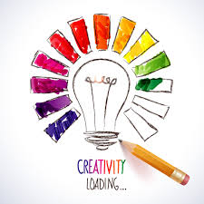
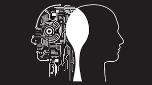
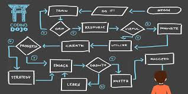
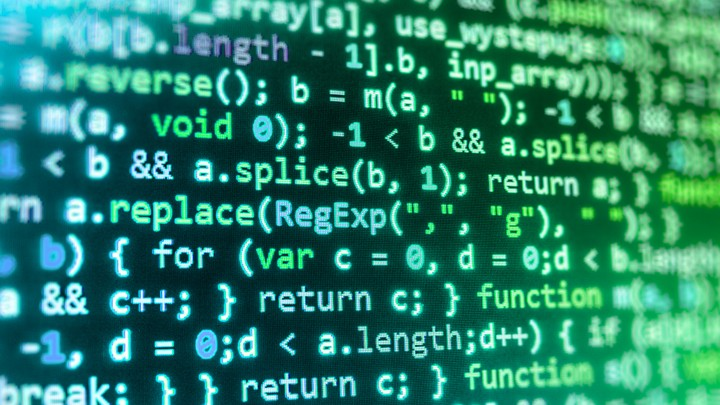
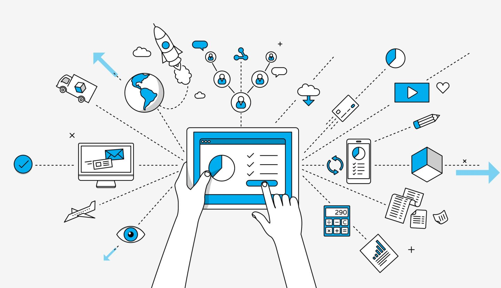

In AP Computer Science Principles, there are 8 big ideas that make up the foundation of what we know as computer science, most of them also relate to real life, and have applications you wouldn't expect. Here they are
Computing is a creative activity. In this course, you will use the tools and techniques of computer science to create interesting and relevant digital artifacts (e.g., a video, animation, infographic, audio recording or program) with characteristics that are enhanced by computation.
In many projects I have had to use my creative mind to devise a program or process I could use to create a powerpoint or visual aid of somekind. Once I used minecraft and redstone repeaters, along with screenshots to show the progression of Personal computers overtime.
Abstraction is a central problem-solving technique in computer science. In this course, you'll use abstraction to model the world and communicate with people and machines.
Abstract thinking has helped me solve many problems, like how when I was struggling with translating hexadecimal into binar, I had to use abstract thinking. By looking at the translation of bases in a different perspective, I picked it up no problem.
Data and information facilitate the creation of knowledge. Managing and interpreting an overwhelming amount of raw data is part of the foundation of our information society and technology. In this course, you will work with data to better understand the many ways in which data is transformed into information and knowledge.
Working with and being able to translate information is key to
Algorithms are used to develop and express solutions to computational problems. They are fundamental to even the most basic everyday task. In this course, you will work with algorithms in many ways: You will develop and express original algorithms, implement algorithms in a language, and analyze algorithms analytically and empirically.
Programming enables problem solving, human expression, and creation of knowledge. It results in the creation of software, and it facilitates the creation of computational artifacts, including music, images, and visualizations. In this course, you'll learn the fundamental concepts of programming that can be applied across a variety of projects and languages. You will create programs, translating human intention into computational artifacts.
The Internet and systems built on it have a profound impact on society. It pervades modern computing. In this course, you will: gain insight into how the Internet operates; study characteristics of the Internet and systems built on it; and analyze important concerns, such as cybersecurity.
Computation has changed the way people think, work, live, and play. In this course, you'll become familiar with many ways in which computing enables innovation. You will analyze the potential benefits and harmful effects of computing in a number of contexts.

In the field of IT, visibility and understandability is incredibly important in all aspects. WHats the point of being able to create a project or code or website or product, if your users can't understand what it is, or what its purpose is. That is exactly why we use the acronym K.I.S.S, Keep It Simple Stupid.